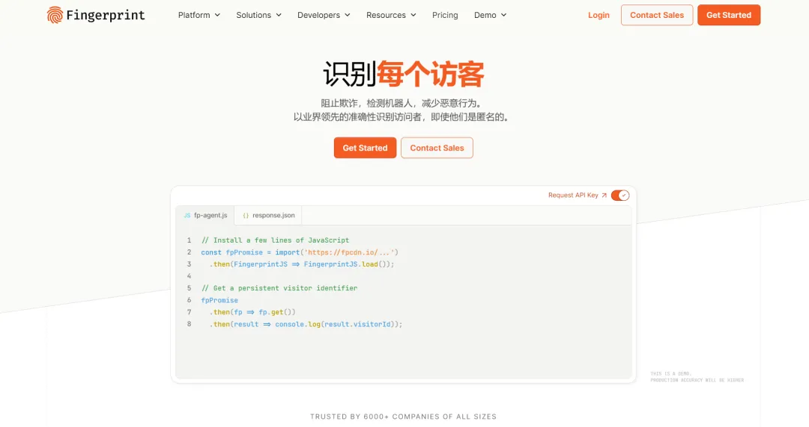

Fingerprintjs 是一个快速且轻量级的浏览器指纹标识生成库，基于 JavaScript 实现，它可以通过收集用户浏览器的一些特征信息，如浏览器类型、操作系统、屏幕分辨率、系统字体、Canvas 技术等，来生成一个唯一的浏览器标识，匿名识别网络浏览器的准确率最高可达 99.5%。
访问者识别：Fingerprint 能够识别每个访问者，包括那些选择匿名的。
高精度：即使在清除了 cookies 的情况下，Fingerprint 也能提供持续数月甚至数年的行业领先准确性。
减少验证步骤：对于合法用户，Fingerprint 旨在减少验证步骤，提供更流畅的用户体验。
阻止恶意行为：对于欺诈和恶意行为，Fingerprint 能够识别并阻止，保护网站和用户。
// 安装
npm i @fingerprintjs/fingerprintjs -S
// 导入
import FingerprintJS from '@fingerprintjs/fingerprintjs'
//获取浏览器唯一标识
getCode(){
FingerprintJS.load().then(fp => {
fp.get().then(result => {
const visitorId = result.visitorId;
console.log('获取浏览器唯一标识：',visitorId);
});
});
}
用户账号接管：识别并阻止使用被盗凭证的登录尝试，同时确认合法用户。
机器人检测：检测恶意机器人、自动化工具和其他复杂威胁，以防止实时攻击。
反欺诈保障：Fingerprint 可以用于识别欺诈用户，从而防止欺诈行为的发生。
由于涉及到用户隐私和安全问题，使用时需遵守法规，确保用户隐私安全。